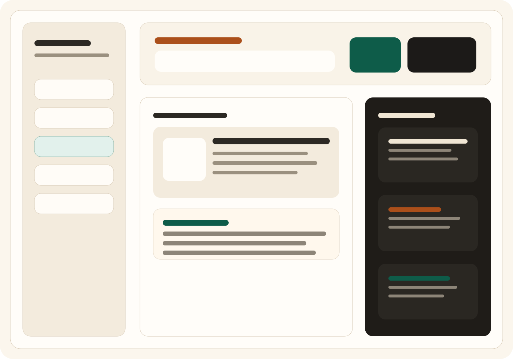
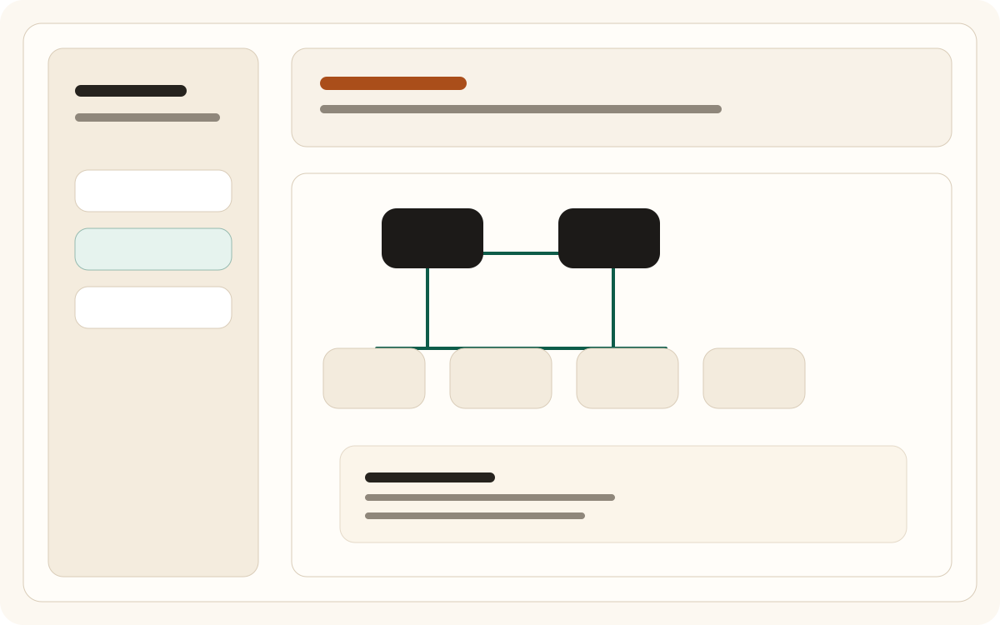
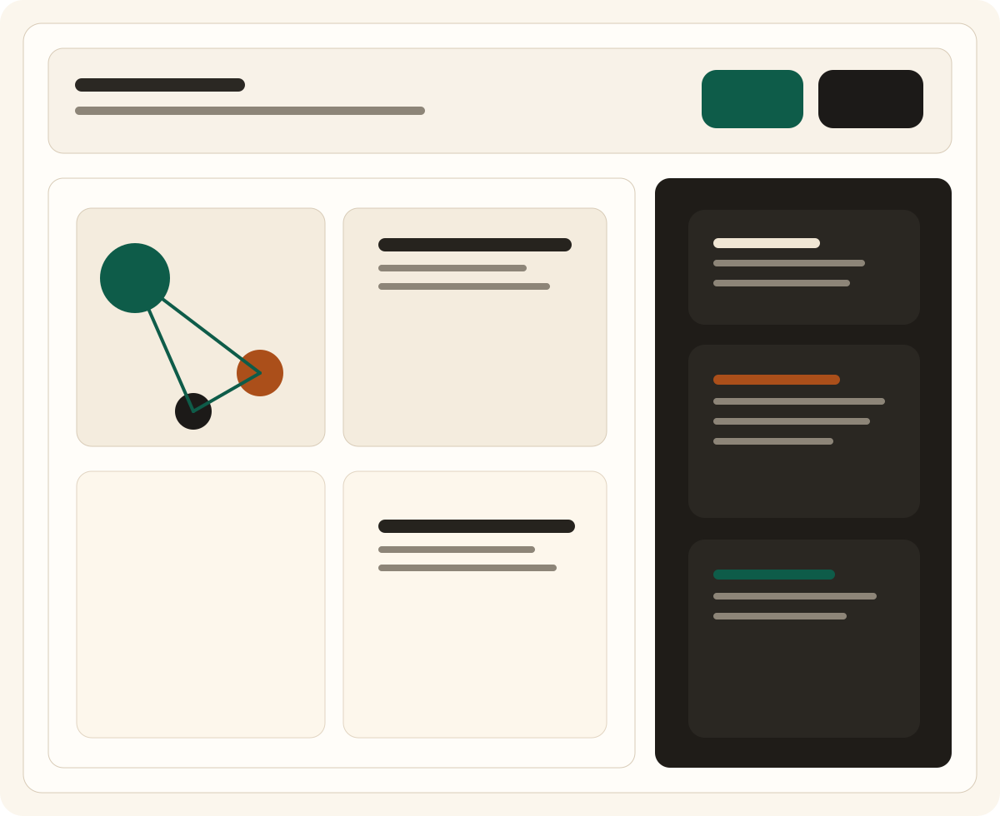
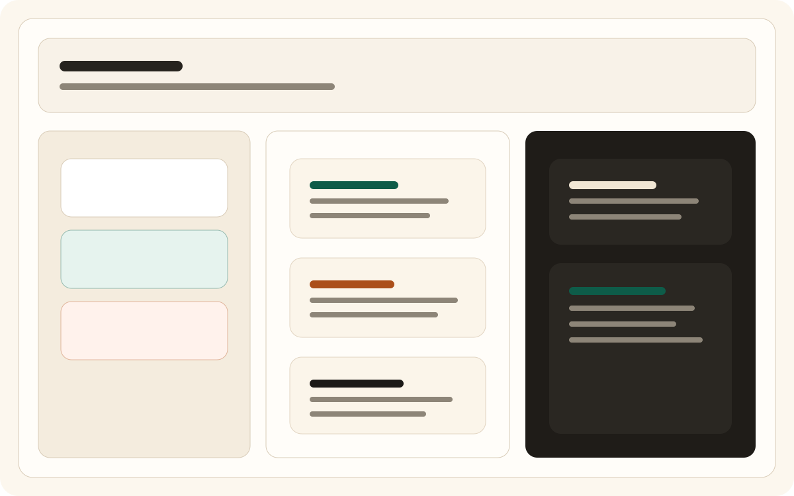

Scattered notes collapse under pressure
Decisions, task state, and open risks drift across chats, markdown files, temporary scratchpads, and half-remembered plans.
Early product, publicly explained
TreeMA gives scattered project context a durable home. Keep structure, decisions, risks, and AI-generated proposals explicit enough to inspect, review, and trust without turning your project into another pile of notes.

Problem
Decisions, task state, and open risks drift across chats, markdown files, temporary scratchpads, and half-remembered plans.
Builders know what matters right now, but the logic behind scope, tradeoffs, and priorities rarely survives in a durable structure.
Without a stable workspace contract, every new prompt has to reconstruct the same mental model from incomplete evidence.
How TreeMA Works
TreeMA keeps project state explicit first, then layers analysis and AI review on top of that contract instead of replacing it.
Structure the project map, current tasks, decisions, and risks in a workspace that stays legible outside any single chat or session.
Analyze a real repository into staged artifacts that separate observed facts, inference, uncertainty, and execution readiness.
Let AI suggest updates, but keep canonical mutation review-driven so state stays explicit and durable.
Core Capabilities
Keep project structure, task state, and context rooted in a deterministic `.treema` workspace contract.
Generate staged inventory, analysis, architecture, and execution artifacts from a real project folder with validator-gated outputs.
Review proposal diffs before any canonical change so AI remains an assistant, not the source of truth.
Preserve decisions, risk movement, and narrow focus updates in a workspace that survives across sessions and tooling changes.
Screens
These placeholders reserve the slots for product captures based on the existing app views. Replace them with real exports without changing layout or asset paths.



Why Explicit State Matters
TreeMA is not trying to be a full PM suite. It exists to keep project state inspectable enough that humans and AI can operate on the same durable frame.
Product Status
TreeMA is in MVP shape. The current surface is intentionally focused on local workflows, explicit workspace files, and reviewable AI assistance.
Run Locally
TreeMA already runs as a local browser app and Electron desktop shell. Start with the browser flow, then move into desktop if you want the same UI with native folder access and IPC-backed actions.
npm run serveThen open http://localhost:4173.
npm install
npm run desktopThe Electron shell loads the same app surface from the local repository.
npm run treema -- init /path/to/project "My Project"
npm run treema -- analyze /path/to/projectInitialize a `.treema` workspace and scan a real project into staged artifacts.
Next Step
Start with the overview if you want the full repository context. Jump into the app if you already want to inspect the workspace, scan surface, and review flow.